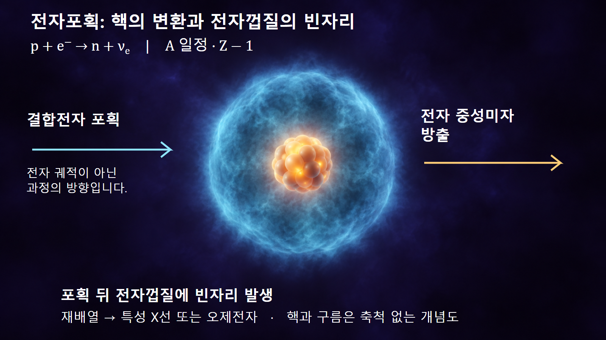
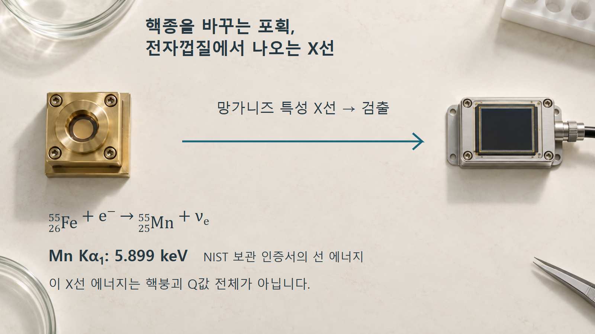

방사성붕괴와 시간 · 045
전자포획
핵의 변환과 전자껍질 재배열의 구별
원자에 결합된 전자가 핵의 변환에 참여합니다. 이후 전자껍질이 재배열되면서 생기는 신호까지 구별하면 전자포획 선원의 특성이 드러납니다.
결합전자를 이용하는 핵의 변환
전자포획은 원자핵이 원자에 속한 전자를 포획하면서 양성자 하나를 중성자로 바꾸고 전자 중성미자를 내보내는 붕괴입니다. 전자포획을 나타내는 EC는 electron capture의 약자입니다. 핵 가까이에서 전자를 발견할 확률이 있는 전자 상태가 이 과정에 관여합니다.
핵 내부의 변환을 p + e− → n + νe로 적습니다. [1] p는 양성자, n은 중성자, νe는 전자 중성미자입니다. 전하의 합은 +1−1=0으로 양쪽이 같으며, 양성자가 중성자로 바뀌므로 질량수 A는 유지되고 원자번호 Z는 하나 줄어듭니다.
여기서 전자포획은 전자가 껍질에 새로 붙어 음이온을 만드는 현상과 다릅니다. 음이온 형성에서는 핵의 양성자수가 그대로지만, 핵붕괴인 전자포획에서는 원소 자체가 바뀝니다. 그림의 안쪽 화살표도 전자가 행성처럼 정해진 궤도를 돌다 핵으로 추락한다는 뜻이 아닙니다.
핵반응 뒤에 남는 전자껍질의 빈자리
안쪽 껍질의 전자가 포획되면 해당 전자 상태에 빈자리가 남습니다. 더 높은 에너지 상태의 전자가 낮은 상태를 채우면서 에너지 차이가 방출될 수 있습니다. 이때 광자로 내보내는 경로가 특성 X선 방출이며, 다른 전자를 방출시키는 비복사 경로가 오제전자 방출입니다.
철-55의 여러 껍질 포획과 이후 X선·오제전자 재배열은 구분합니다. [3] 따라서 핵종 전환, 중성미자 방출, 전자껍질 재배열을 하나의 광자 방출 사건으로 합쳐 읽으면 안 됩니다.
포획하는 전자는 초기 원자에 결합되어 있던 전자입니다. 오제전자는 포획 뒤 원자 재배열에서 에너지를 받아 밖으로 나오는 다른 전자입니다. 핵에 포획된 전자와 이후 방출되는 오제전자는 같은 역할을 하는 입자가 아닙니다.

예시 1: 베릴륨-7에서 리튬-7로의 전환
베릴륨-7은 양성자 4개와 중성자 3개로 이루어집니다. 양성자 하나가 중성자로 바뀌면 양성자 3개와 중성자 4개인 리튬-7이 됩니다. 핵종 변화는 74Be + e− → 73Li + νe로 표시하며, 4+3=3+4=7로 핵자수가 같습니다.
베릴륨-7의 전자포획에는 리튬-7 바닥상태와 약 477.6 keV 여기상태로 가는 두 경로가 있습니다. [2] 여기상태로 가면 이후 핵이 낮은 상태로 내려오면서 약 477.6 keV 감마선을 낼 수 있습니다. 이것은 앞에서 설명한 전자껍질의 X선과 발생 위치가 다릅니다.
이 페이지의 2002년 평가·2009년 수정 데이터에서 여기상태 분기는 10.44%입니다. 이를 교육용 계산에 사용하면 붕괴 1,000회당 기대되는 해당 분기 수는 1,000 × 0.1044 = 104.4회입니다. 분수 사건이 실제 발생한다는 뜻이 아니라 여러 번 반복했을 때의 평균이며, 한 번의 측정에서 정확히 104회가 보장되지는 않습니다.
이 계산은 데이터 읽기 예시입니다. 현재의 정밀 교정값을 확정하는 용도가 아니며, 실제 검출계수는 방출확률에 더해 검출효율과 기하조건의 영향을 받습니다. 모든 전자포획에 감마선이 반드시 동반된다고 일반화해서도 안 됩니다.
예시 2: 철-55 선원에서 관측하는 망가니즈 X선
철-55에서 전자포획이 일어나면 핵의 양성자수는 26에서 25로 줄고 망가니즈-55가 됩니다. 핵자수는 55로 유지되며, 중성자수는 29에서 30으로 늘어납니다. 반응식은 5526Fe + e− → 5525Mn + νe입니다.
포획 이후 재배열되는 전자들은 이미 딸원소 망가니즈의 핵 주변에 있습니다. 따라서 철-55 선원에서 망가니즈의 특성 X선을 관측한다는 말은 모순이 아닙니다.

망가니즈 Kα1 선 에너지는 5.899 keV입니다. [4] 이를 단위만 바꾸면 5,899 eV입니다. 다른 K선도 존재하므로 모든 방출광자의 에너지가 하나로 동일하다는 뜻은 아닙니다.
이 선 에너지는 원자의 전자 상태 차이에 해당합니다. 핵붕괴 전체의 Q값과 같은 양이 아니며, 중성미자가 운반한 에너지가 전부 이 X선 검출기에 들어온다고 계산해서는 안 됩니다.
저에너지 계측의 창과 흡수 손실
철-55의 저에너지 X선은 검출기의 에너지 응답을 확인하는 데 활용할 수 있습니다. 그러나 선원에서 방출된 수와 검출기에서 기록한 수 사이에는 선원 덮개, 이동 경로, 검출창과 검출효율이 있습니다. 측정 신호가 약하다고 곧바로 전자포획이 적게 일어났다고 결론내릴 수는 없습니다.
선원 표면에 대한 방출 방향과 덮개에서의 흡수는 교정에 영향을 줍니다. [4] 또 저에너지 방사선의 흡수·산란 손실은 활동도 평가를 어렵게 합니다. [3] 여기서는 특정 장비의 성능이나 작업 절차를 정하지 않고, 발생원과 검출 신호를 구별하는 근거로 사용합니다.
양전자 방출과의 차이 및 환경 조건
전자포획과 양전자 방출은 둘 다 Z를 하나 줄일 수 있지만, 전자는 기존 결합전자를 이용하고 후자는 양전자를 새로 방출합니다. 따라서 같은 핵종 변화만 보고 동일한 방출입자나 동일한 검출 신호를 기대해서는 안 됩니다.
전자포획에는 에너지 조건과 전자 상태가 함께 관여합니다. 베릴륨-7의 전자밀도와 화학환경에 따른 붕괴율 변화가 연구되었습니다. [2] 이 사실은 모든 핵종의 반감기를 일상적인 화학 조작으로 크게 바꿀 수 있다는 뜻은 아닙니다.
이 글의 설명은 결합전자가 있는 원자를 기준으로 합니다. 전자가 거의 없는 고도로 이온화된 원자나 플라스마에 같은 설명을 그대로 적용하지 않으며, 그러한 조건에서는 전자 공급과 점유 상태를 별도로 다루어야 합니다.
발생 위치로 구분하는 방사선 신호
전자포획을 이해할 때에는 핵의 양성자수 변화부터 확인한 뒤 전자껍질의 빈자리와 후속 방사선을 추적합니다. X선, 오제전자, 감마선은 서로 다른 과정에서 생길 수 있으므로 이름이나 에너지 크기만으로 하나의 원인에 묶지 않습니다. 다음 표는 두 실제 핵종 예시에서 확인한 구분을 정리합니다.
| 과정 | 변화·방출 | 판단 기준 |
|---|---|---|
| 전자포획 | Z 감소, 중성미자 방출 | 핵종과 에너지 조건 |
| 전자껍질 재배열 | 특성 X선·오제전자 | 껍질 전이와 방출확률 |
| 딸핵의 탈여기 | 경로에 따라 감마선 | 핵준위와 분기 |
| 검출 신호 | 광자·전자 에너지 침적 | 흡수 손실·기하·효율 |